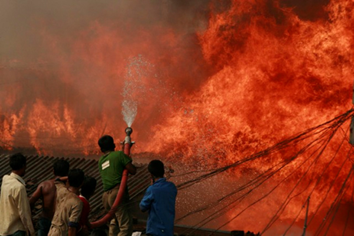

Emergency Response Plan
Issue Overview
The Emergency Response Plan includes any measures that should be in place at all facilities to combat an accident resulting from fire, explosion or due to any natural calamities (e.g., flood, cyclones). The ECR 1997 mentions that 'Orange B' and 'Red' category facilities are to submit emergency response plans in their application for an ECC. Although BEPZA has not provided written or formal instructions to the enterprises, they do require enterprises to enact periodical fire fighting rehearsals, inspect their enterprises for adequate fire exits, fire extinguisher trained personnel for using all these instruments, and proper indication in the facility building for emergency exit routes.
Best Practice
Considering the cleaner production perspectives of industrial operations, it is recommended to avoid or, where avoidance is not possible, to minimize the use of hazardous materials.
Priority should be given to eliminate Chemicals/Hazardous Materials wherever possible. For example:
Priority should be given to eliminate Chemicals/Hazardous Materials wherever possible. For example:

Develop an emergency response plan considering the nature of the facility operations, types of materials used in the facility, the physical area and layout of the facility, number of employees, and connectivity (communication networks, distance) with the emergency response agencies and capacity of local emergency agencies;
Perform emergency drills quarterly, so that employees are familiar with their emergency response duties and evacuation routes.
Emergency Response Equipment and Exits
Response equipments (such as fire extinguisher, hose pipe, fire ladder) should be easily accessible;
Fire exit passages and stairs should be kept free for allowing people to leave the impacted area immediately;
Photo: Fire extinguishing equipment in Youngone
Layout of the facility including exit layout should be available in common/easily visible places.
Facility utilizing chemicals or hazardous materials in its process needs to take following measures to prevent spills, leaks and any other releases due to misuse, mishandling or poor storage procedures:
Emergency Communication
Use alarm bells, visual alarms, or other forms of communication to reliably alert workers to an emergency. Related preparedness measures include:

Test warning systems at least annually (fire alarms monthly), and more frequently if required by local regulations, equipment, or other considerations;
Install a back-up system for communications on-site with off-site resources, such as fire departments, in the event that normal communication methods may be inoperable during an emergency.
Mark specific areas where employees should gather during a fire alarm or any emergency announcement.
Fire Services
Assess capacity of local fire fighting agency and whether adequate equipment is available for use at the facility in the event of a major emergency or natural disaster. If capacity is insufficient, fire fighting capacity should be acquired that may include fire extinguishers, pumps, water supplies, trucks, and training for personnel.
Medical Services
Facility should provide first aid attendants as well as medical equipment suitable for the personnel, type of operation, and the degree of treatment likely to be required prior to transportation to hospital.
Essentials of an Emergency Response Plan
Recordkeeping
The following records should be kept:
Emergency Response Plan (with latest revisions/updates noted);
Emergency training records (who participated, what topics were covered, when organized);
Module and materials used for training;
Emergency preparedness drill/rehearsal (who participated, type of hazard considered for drill);
Evaluation feedback from training and emergency drills;
Records and information about previous incidents (nature of assets lost, damage, injuries or casualties).
Case Study: Emergency Response at the Shanta Industries
The Shanta Group has adopted emergency preparedness and response plans to combat various types of possible emergencies at their facilities. They have identified and trained staff to be responsible for performing specific responsibilities during a hazard (e.g. fire, explosion, spills). Shanta management periodically organizes emergency response drills for all of their employees. To make the evacuation procedure easy and smooth, they ensure that their fire exits are clear at all times. They have also marked and identified specific areas outside their factories where their employees go during their drills so that they know where to go during an actual emergency. In addition, they have in-house an adequate number of fire extinguishers, hose pipes and water supply line to combat a fire related emergency situation. Shanta also keeps records of their emergency response efforts including training, participants, and when fire drills are conducted.
Photo: Fire exit passage in Shanta Industry.
Photo: Fire fighting instrument in Shanta Industry at the DEPZ